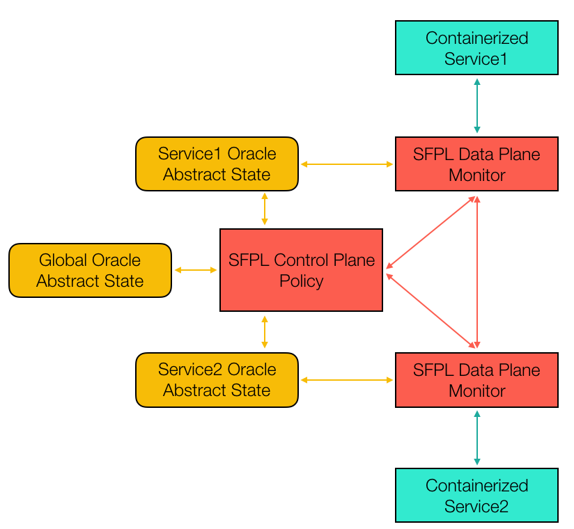
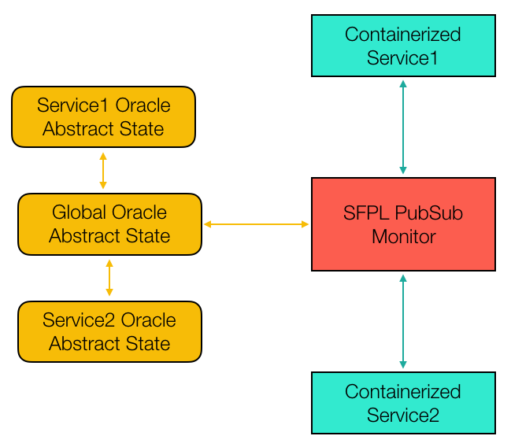
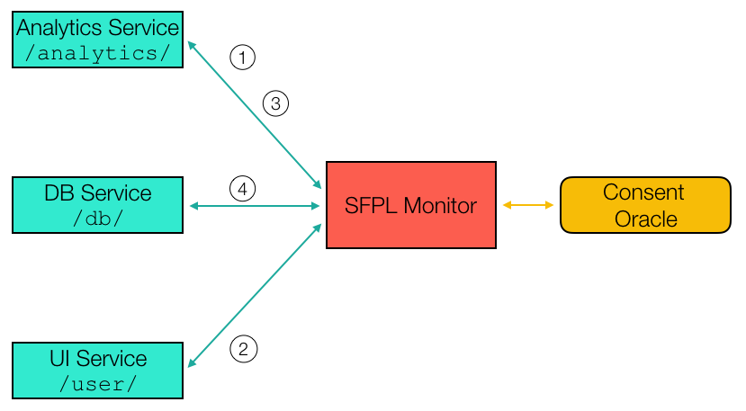

Table of Contents
1 SPFL Objectives and Requirements
1.1 TODO
2 SFPL Proposed Syntax
3 Distributed Architecture
3.1 Architecture Overview

Figure 1: Descentralized Architecture
Figure 1 presents a view of the architecture planned for SFPL running only two containerized services: Service1 and Service2. Each of the services has a single connection to an SFPL Monitor, which is implemented by a data-processing proxy. These monitors enact the SFPL policy related to the service to which they connect. In particular, SFPL policies might need to keep track of some abstraction of the state being manipulated by the application. Typical examples would be the tracking of sessions, the monitoring of data and information flows, etc. To avoid exposing the application code to the policy, SFPL keeps an abstract version of the state being manipulated by the application. In particular, a good design would only keep the data strictly necessary to implement the policies at hand. The current implementation of SFPL would define for the public API of each service a number of pre and post-conditions that define whether the calls are allowed to be made, depending on the caller, the receiver, and the current abstract state as tracked by the SFPL monitors. Since the SFPL policies could predicate on this state, we provide service oracles, which are query functions on the current abstract state to validate or deny a particular call. In the example of 1 there are only two services, and to simplify the argument we have chosen to have an oracle for each for them. In a nutshell, these oracles keep the SFPL-related state that is required to validate the pre and post-conditions of the calls made and received by each of the services. Finally, we would have a central SFPL control plane which takes care of the coordination and distribution of the policies to the concerned monitors. We will leave this component rather abstract for the time being.
3.2 And SFPL monitored call

Figure 2: Template for a REST request under the descentralized architecture
Figure 2 presents the call sequence of a REST request issued from Service1 to Service2. Below is a description of the sequence of calls:
- A call from Service1 to Service2 is mediated by the SFPL Monitor proxy (S1Monitor),
- The Monitor evaluates the pre-condition of the call by issuing calls to the Oracle maintaining the abstract state of Service1. In essence, this is the state that SF PL records to enforce the policy of Service1,
- Assuming that the pre-condition check succeeds, the call can proceed from the monitor S1Monitor to the monitor of the target of the call: S2Monitor,
- Upon receving the call, the S2Monitor might additionally perform some pre-condition checks related to the execution of the call from the stand-point of Service2. Notice that since we assume that all the monitors are controlled by a single controller, the checks on egress of S1Monitor and ingress of S2Monitor might be collapsed to a single check. In that case the checking monitor might need to access both S1Oracle, and S2Oracle. Moreover, while in the diagram the oracles are separated as different services, they could reside in a single monitor,
- If all checks sauced, the call is actually forwarded to Service2 which executes it and returns the response to its SFPL monitor for further processing,
- When receiving the response, S2Monitor could chose to verify the post-condition of the call, again this requires consulting S2Oracle (under the same provisions discussed above),
- Similar to the steps 2 and 4 above,
- The S2Monitor responds to S1Monitor, which might do some more post-condition checks,
- Same as 2, 4 and 7,
- If all checks are accepted the response is delivered to the client.
3.3 Implementation aspects
Many of the components depicted in 2 can be simplified, and/or implemented in a number of different ways, we consider here a number of simplifying options.
3.3.1 Centralized monitoring:
In this case, there would be a single central monitor that validates all requests. This monitor would intercept all calls made by any service, evaluate the pre-condition, forward the call to the receiver, intercept the answer, evaluate the post-condition and only then forward the answer to the caller. In this scenario the oracles could all reside with the monitor, or be implemented as a single separate services. This option will be considered in the next section.
3.3.2 Multi-oracle pre/post-conditions
While in the example above we have chosen to connect each monitor to a single oracle, each monitor could query more than one oracle (including other services oracles) since they are under the control of SFPL. A challenge for SPFL is to separate the oracles in a way that minimizes rpc calls, and therefore latency.
3.3.3 Ingress vs. egress validation
In the call example above we have chosen to verify each pre-condition and post-condition both at ingress and egress, requiring a total of 4 additional roun-trips to evaluate the assertions. This is not strictly necessary: some amount of coordination between the ingress checking and the egress checking could make it so that the pre/post-conditions can be checked only at one site. Moreover, we could simplify SPFL to assume that checks are performed only on ingress or egress.
3.3.4 Manipulation of the abstract state
While it simplifies the description to imagine that each service has its own abstract state, the management of the abstract state and the decomposition into services are not necessarily related. It could be the case that multiple oracles are implemented as a single unit.
3.3.5 Implementation of the Oracles
There are numerous implementation choices for the oracles. Here we present a number of options. We will consider the advantages and disadvantages of each of them in the future:
- Each oracle is implemented as a standalone service/server
- Each oracle is implemented as a process along-side with the monitors
- The oracles are implemented as a shim-layer on top of existing programming languages/frameworks for distributed programming
- The oracles are embedded in the RPC mechanism used for the application
- The oracles are centralized in the controller of SFLL
- …
4 Publish Subscribe (PubSub) Architecture
In this case we consider a simplified view of the architecture presented above, where we restrict the communication of the services to utilize an SFPL-capable Publish/Subscribe like broker. We will develop this solution as a first attempt at demonstrating the capabilities enabled by SFPL.

Figure 3: Publish Subscribe Architecture
Figure 3 shows a proposed architecture where the policies of SFPL are evaluated in a centralized server in the style of a PubSub broker. As in the previous section we only have two services that communicate with each other through this centralized broker. Unlike in the section before, a typical request in this scenario does not involve the response phase, since only publish events are considered. Most aspects of this architecture are self-explanatory, with perhaps the most salient difference being that the whole abstract state is managed/contained with the broker. This vastly simplifies the architecture of the previous section.
4.1 An SFPL monitored publish
5 Demonstration Use-case
We consider a simple application where a user, an analytics service and a data base cooperate. In this case, the data-base records information that is private to the user, and the analytics service queries the user data from the data-base to perform some analysis on the data. Prior to using the user data, the analytics service must demand consent from the user. In the interest of simplicity we will only simulate the consent mechanism, leaving out concerns on communication authorization, data validation, timeouts or error cases. We will also ignore post-conditions. We assume that consent refers only to the use or not of the database service with a particular userID.
5.1 Use Case Architecture

Figure 5: Consent App Architecture
5.1.1 API
- We assume that each service is published as a topic at which it can
receive requests
/user/requestConsent(userID)
/analytics/grantedConsent(analytics, userID)
/db/readData(userID)
/analytics/sendData(userID, data)
- The operations are numbered as they occur in the figure above
5.1.2 Verification conditions
- Below we provide the assertions that need to be checked by the
monitor to check the correct execution of the monitor
- No pre-condition, post-condition or effect
No pre or post-condition.
Effect:
consentOracle.grantConsent(analytics, userID)
Pre-condition:
consentOracle.hasConsent(analytics, userID)
No effect or post-condition.
No pre or post-condition.
Effect:
consentOracle.revokeConsent(analytics, userID)
5.1.3 Notes:
This is a simplistic policy whose only purpose is to check that a simple consent policy is followed. Essentially we verify that before each query to the data base, the querying service has been provided consent by the user service on the userID that is being requested. A lot of other concerns are left aside in the interest of simplicity.